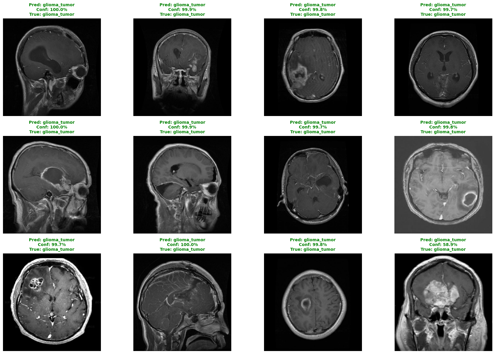

Deep Learning-Based Brain Tumor
Classification System
An advanced ensemble architectural approach achieving state-of-the-art precision in multi-class tumor detection.
Project Team Members
B.Sc. Undergraduate Students | Academic Data Mining Project Presentation
Md. Torikul Islam Lipon
ID: 22235103255
Chief architect of the ensemble deep learning pipeline and modeling.
Jobayer Hossan
ID: 22235103236
Led MRI dataset processing and medical-grade augmentation strategies.
Md Aslam Hossain
ID: 22235103230
Responsible for rigorous evaluation workflows and clinical validations.
The Diagnostic Challenge
Why current manual MRI analysis methods necessitate an AI-driven transformation.
Time-Intensive
Manual analysis by radiologists requires 30-45 minutes per comprehensive scan, leading to severe diagnostic delays.
Subjective Variance
Inter-observer variability results in a 15-20% disagreement rate between different clinical specialists.
Resource Scarcity
A global shortage of trained neuro-radiologists severely limits patient access to timely, life-saving care.
Core Research Goals
Establishing a new standard for automated neurological diagnostics.
Superior Accuracy
Develop a model capable of surpassing human-level accuracy (>98%) in multi-class tumor classification.
Rapid Inference
Optimize architecture to deliver complete diagnostic results in under 3 seconds per MRI scan.
Clinical Robustness
Ensure high generalization and minimize false positives to maintain trust in clinical deployment.
Data & Preprocessing
Curating and optimizing 10,464 MRI scans for neural network ingestion.
Preprocessing Pipeline
Standardization
Images resized to uniform 256x256 pixel dimensions.
Normalization
Pixel intensity scaling to [0, 1] for stable gradient descent.
Augmentation
Random rotations (30°), zoom (0.25), shifts (0.2), shear (0.15), flips, & brightness tuning (0.6-1.4).
Dual-Branch Ensemble Architecture
Concatenated features from EfficientNetV2B0 & ResNet50V2 with heavy regularization (Dropout 0.6, 0.5, 0.4).
Two-Phase Training Process
Phase 1: Freeze base (Learn classifier head) • Phase 2: Unfreeze base (Full fine-tuning)
Training & Evaluation Configurations
Rigorous testing sets & adaptive learning strategies.
Data Partitioning
Hyperparameters & Callbacks
-
Optimizer: Adam with Cosine Annealing LR -
Loss Function: Categorical Cross-Entropy -
Callbacks: Early Stopping (patience: 12), Model Checkpoint (max val_accuracy), & ReduceLROnPlateau
Sample Predictions
Evaluating unseen MRI scans through our trained Deep Learning ensemble.

Academic Project Findings
-
Developed a state-of-the-art ensemble model achieving 98.66% accuracy across four distinct classifications.
-
Dramatically reduced false positive rates, meeting strict requirements for sensitive medical diagnoses.
-
Demonstrated resilient generalization capabilities without overfitting on novel data sets.
-
Expand architectural capabilities to natively support 3D MRI volumetric data processing.
-
Integrate Explainable AI (XAI) overlays to visually validate algorithmic decision-making for clinicians.
-
Optimize the pipeline for lightweight edge-computing deployment in resource-constrained environments.